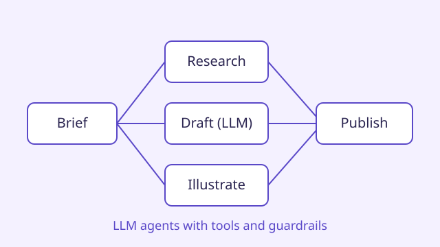
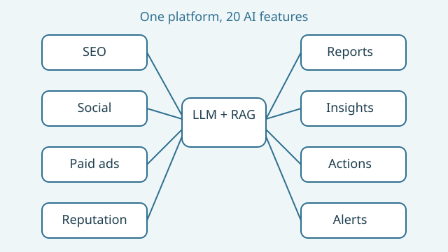
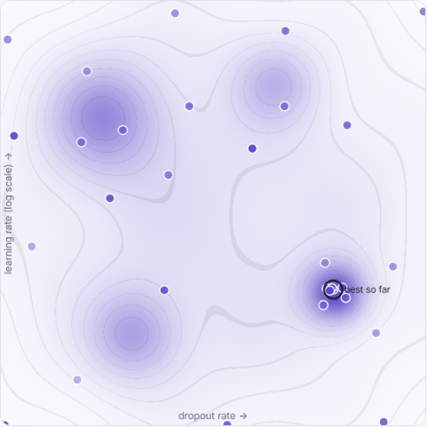

AI: research, experiments & production
Generative-model research from my PhD, experimental ML systems and infrastructure, and LLM-powered products in production, built for real users.
Products in daily use
These are company products, so the code is private and the products are not named. Each page describes the system, how it fits together and my role.

01.1AI content platform
Researches, writes, illustrates, plans and publishes marketing content with LLMs, with an in-app assistant that edits documents using the platform's own tools.

01.2All-in-one digital marketing platform
One platform for SEO, social media, paid ads and reputation management, with 20 AI features on hosted LLMs and retrieval over each client's data.
Ideas from my PhD
Research on generative models and optimisation, explained with interactive demos. The thesis and papers are linked from each page.

02.1Searching Without Gradients
How to search when there is no gradient and every try is costly: hyperparameter search on a GPU cluster, and finding the latent code behind a motion in a trained generator. Try five search strategies on a live landscape.
Systems behind the research
Infrastructure I built for training generative models.
 03.1
03.1
ML Training Platform
GPU training platform used for the research work in my PhD thesis: simulation-generated data, containerised TensorFlow and PyTorch training, Optuna search, a model registry and deployment.